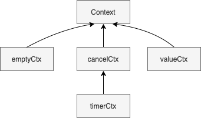
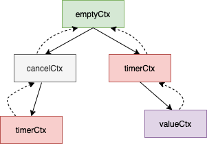

Go 语言实现——Context¶
首先，Context 是一个接口。
type Context interface {
Deadline() (deadline time.Time, ok bool)
Done() <-chan struct{}
Err() error
Value(key interface{}) interface{}
}
context 包中提供了 4 种类型的 Context：emptyCtx、cancelCtx、timerCtx、valueCtx，这 4 种类型的 Context 通过 Embedding 的方式有如下的继承关系。
context.Background() 和 context.TODO() 返回 emptyCtx，这个 Context 不会被 cancel，没有 deadline，也没有 value，emptyCtx 就是一个普通的 int，int 值没有意义。这个 context 一般被用作 root context。
type emptyCtx int
var (
background = new(emptyCtx)
todo = new(emptyCtx)
)
func Background() Context {
return background
}
func TODO() Context {
return todo
}
调用 context.With* 函数可以创建新的 Context，这些 Context 会从 root context 开始构成一个树，树的节点带有指向父节点的指针，如：
context.WithTimeout(context.WithCancel(context.Background()), 3*time.Second)
context.WithValue(context.WithDeadline(context.Background(), time.Now().Add(1*time.Second)), "mykey", 1)
代码执行后会生成如下的 context 结构：
context.WithDeadline 和 context.WithTimeout 都是创建的 timerCtx，context.WithTimeout 是 context.WithDeadline 的一个简单封装。
以 context.WithCancel 来看下 context.With* 干的事情：
type cancelCtx struct {
Context
mu sync.Mutex
done chan struct{}
children map[canceler]struct{}
err error
}
func WithCancel(parent Context) (ctx Context, cancel CancelFunc) {
if parent == nil {
panic("cannot create context from nil parent")
}
// 1. 创建一个新的 cancelCtx 并保存指向父 context 的指针。
c := newCancelCtx(parent)
// 2. 在父 context 中保存指向新建的 cancelCtx 的指针
// 父 context 取消会导致所有的子 context 一起取消。
propagateCancel(parent, &c)
// 3. 返回新建 cancelCtx 的指针以及取消函数
// c.cancel 是私有函数，没法直接调用，只能通过取消函数取消。
return &c, func() { c.cancel(true, Canceled) }
}
func newCancelCtx(parent Context) cancelCtx {
return cancelCtx{Context: parent}
}